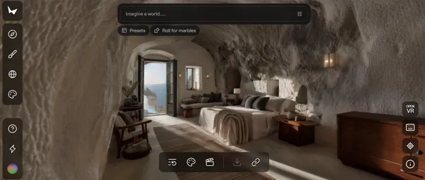

AI 不只會說話：下一波是「空間智慧」
李飛飛提醒：產業低估了 AI 對實體世界、視覺與空間的理解能力。
來源：數位時代文章主圖
文章主軸：大型語言模型之外，AI 若能理解空間、幾何與因果，就會進入零售、物流、醫療、製造等實體營運場域。
李飛飛提醒：產業低估了 AI 對實體世界、視覺與空間的理解能力。
文章主軸：大型語言模型之外，AI 若能理解空間、幾何與因果，就會進入零售、物流、醫療、製造等實體營運場域。
語言模型處理文字，但企業大量工作發生在真實空間。
醫院病患流動、零售陳列、人員配置、倉儲路徑、農業採收、保險損害評估，都依賴視覺與物理感知。
若 AI 只懂文字，它只能協助報告；若 AI 懂空間，它才可能協助營運現場。
空間智慧不是影像辨識的加強版，而是讓 AI 理解幾何、位置、材料、動作與結果。
看見：辨識畫面中有什麼。
理解：知道物體關係、空間結構與下一步可能發生什麼。
行動：把理解轉成配置、模擬、預測與決策。
李飛飛創辦 World Labs，目標是開發 Large World Model。
World Labs 2026 年初完成 10 億美元融資，估值提高。
產品 Marble 可由文字、圖片或影片生成完整 3D 空間。
重點不是「漂亮圖片」，而是讓 AI 能生成與推理可操作的物理空間。

來源：數位時代文章頁面代表圖越依賴實體空間、視覺判斷與現場配置的產業，越可能先受影響。
零售：陳列、動線、人力站位、門市轉換。
物流：倉儲路徑、貨架配置、搬運效率。
醫療：病患流動、空間安全、照護資源配置。
設計／製造：從平面圖走向具物理邏輯的數位空間。
BCG 觀點：當 AI 具備空間感知，實體產業的人力與資源配置會被重算。
過去：靠主管經驗安排人力與現場。
未來：用視覺資料、空間模型與營運目標推算最佳配置。
價值：把「現場直覺」轉成可被測量、比較、優化的決策。
設計軟體巨頭投資與合作，代表空間智慧正在往工程與設計流程落地。
AI 要能理解結構、材料、物理特性與幾何邏輯。
未來可模擬建築安全、工廠物流、城市規劃與下一狀態。
這是從內容生成走向產業基礎設施的訊號。
BCG 調查指出，許多 CEO 更重視技能提升，而不是盲目以 AI 取代人。
AI 缺的是企業內部脈絡與人類判斷。
資深員工的現場經驗很值錢，應該被 AI 放大。
導入時要說清楚角色如何轉換，讓員工看見自己在未來的位置。
這篇文章可延伸成「從文字 Agent 到現場空間 Agent」的產品路線。
門市：陳列與動線分析、缺貨／熱區觀察、人員配置建議。
倉儲：揀貨路徑、貨架配置、到貨與出貨瓶頸分析。
客服／銷售：把照片、商品位置、門市情境納入推薦與排障。
管理：用視覺 + POS + 庫存資料，產出可驗收的營運建議。
下一波 AI 競爭，不只是誰的模型會回答，而是誰能讓 AI 讀懂真實世界。